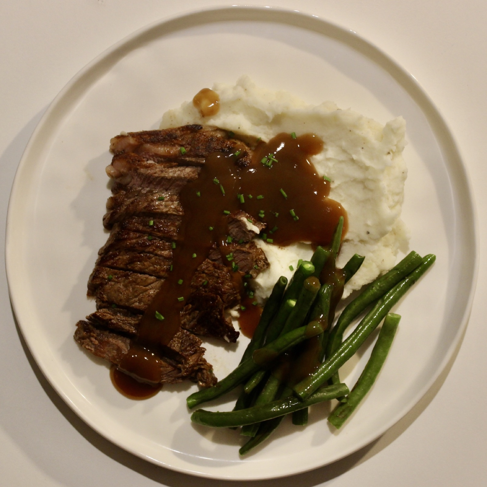

A proper comfort-food plate: steak seared in a hot pan or on the grill, buttery mash, beans finished in the pan and plenty of gravy.
It feels like a treat but only takes about 40 minutes, and most of that is the potatoes boiling while you get everything else ready.
The secret is a properly hot pan and a bit of patience. Dry the steaks well, leave them alone until they've built a crust, and always let them rest before serving.

2 servings
40 mins • High Protein • Base: 2 servings
Steak is one of the best sources of easily absorbed iron and zinc, along with plenty of protein and vitamin B12. Potatoes add potassium and vitamin C, and the green beans bring fibre, folate and vitamin K.